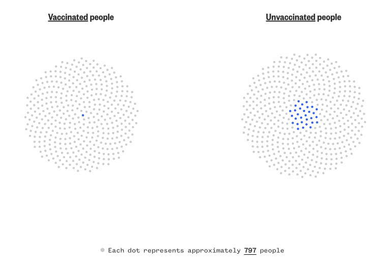
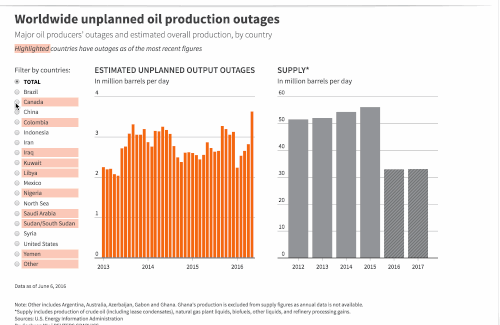
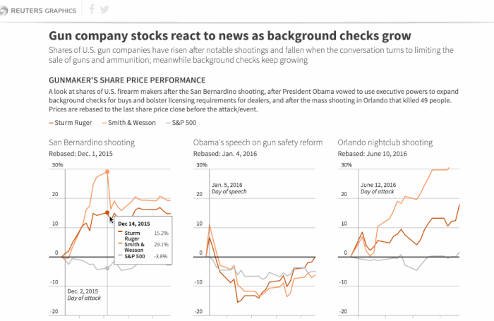

I am currently a national interactive journalist at NBC News Digital data/graphics team. I create compelling, digital experiences including data visualizations, maps, information graphics, dynamic interactive features and cross-format multimedia packages. Here are the selected visual stories.
I also contributed to NBCU Academy program and shared what data journalism is and how we make editorial decisions in daily news workflow. Click here to check the full video.
A while back, I was a data visualization developer for Reuters Graphics team based in NYC at Thomson Reuters, where I focused on developing interactives around recurring economic indicators as well as enterprise packages in response to on-going news events. You may find market reaction packages for U.S. election and Britain’s’ EU referendum (Brexit); Gun company stocks react after Orlando shooting and etc.
Before that, I was graduating from Lede Program in the Graduate School of Journalism at Columbia University. A short time before, while pursuing Master degree in University of Miami, I followed professor Alberto Cairo studying data visualization. Here is the latest scientific graphic I did which featured on National Geographic website.
I also tweet and code. Shoot me an email at wjcjenny@gmail.com if you also love telling stories and lending ears for stories like I do!
Israel-Hamas War
Massacre in the desert: Survivors and videos detail Hamas’ terror attack on an Israeli music festival
#ai2html #QGis #JavaScript
Read the full story here on NBC News.
Israel-Hamas War
The Gaza Strip’s density, visualized: The area is one of the most densely populated places in the world.
#ai2html #QGis
Read the full story here on NBC News.
Breaking news
Libya floods, mapped: How heavy rainfall wiped out a city
#ai2html #QGis
>
Read the full story here on NBC News.
“The big melt is now here”: California braces for floods
#ai2html #QGis
Read the full story here on NBC News.
How did a police chase in Mississippi end with an innocent woman shot in her bedroom?
#ai2html

Read the full story here on NBC News.
Ukraine
Where Putin's war stands a year after Russia invaded Ukraine
#ai2html #QGis
Read the full story here on NBC News.
Investigation
How did a police chase in Mississippi end with an innocent woman shot in her bedroom?
#ai2html
Read the full story here on NBC News.
Investigation
The Forest Service is overstating its wildfire prevention progress to Congress despite decades of warnings not to
#ai2html #QGis
An in-depth story about the Forest Service was overstating to Congress about how much wildfire prevention work it was doing. There’s now a bill in the House to get the Forest Service to keep more accurate records. The bill’s description includes our graphics as well.
Breaking news
Hurricanes and tropical storms are rare in California
#ai2html #QGis
Just five eastern Pacific storm systems have made landfall in the state since 1950, and none have arrived at hurricane strength. Read the full story in our live blog here on NBC News.
Breaking news
When it pours
#ai2html #QGis
Parts of Southern California reported as much as 13 inches of rain in a 48-hour period from Saturday to Monday. Read the full story in our live blog here on NBC News.
Ukraine
U.S. government assessment of possible Russian attack routes
#ai2html

Read the full story here on NBC News.
Ukraine
What an exodus of 11.4 million people looks like
#Illustrator #Javascript
Read the full story here on NBC News.
Covid
The new faces of Covid deaths - The most recent group of 100,000 deaths
#JavaScript #Python
We tracked reported Covid deaths since the start of the pandemic. Visualized the share of a state's Covid deaths and how that share changed from the first 100,000 deaths to the latest 100,000 deaths.
Black people and white people make up outsize shares, and there are younger people are dying of Covid.
Read the full story here on NBC News.
Covid
Data shows how rare severe breakthrough Covid infections are
#JavaScript
In 2022, the project won the SND, Format: Use of Data - Award of Excellence. Read the full story here on NBC News.
Special report
Watch this space - New telescope to unlock mysteries of the cosmos
#JavaScript
NASA's cosmic time machine, the James Webb Space Telescope, was planned to take us across the universe and back in time. It was a flawless launch, but nerves will continue to run high as the Webb's journeys about a million miles to its L2 orbit and begins unfolding in space. We worked closely with video editors, 3D animators to show how the telescope travle from the earth to its destination through scrolly tell.
Read the full story here on NBC News and learn how it will work.
Special report
Built to keep Black from white

#mapbox #QGis #Illustrator
This project is about how a segregation wall built 80 years ago is still impacting the community in Detroit. Visually we want readers to be able to see the wall and show them what was there, what has been changed and what still left there. I went through those historic documents with reporters and editors, and built a 3d version of the wall at its exact location. We used a scrollytell to shade each side of the wall to tell stories.
And the most interesting part of this story is dealing with some historic demographics data. We want to show people how this community has been segregated for a long time and how that is still happening right now. One data angle I came up with is to show where people lived exactly by their races over time. We started from 1930, a few years before the wall was raised up, and ended with the latest Census data. With different colors representing white people and Black people, and position them based on Census Block shapes. With the over time data, visually we get to see that white families are moving out of the city while more Black families live in Detroit. We also overlay home value data and spot home prices are significantly higher in White neighbourhood nowadays compared to Black neighbourhood.
In 2022, the project won the Webby Awards, Websites and Mobile Sites Best Individual Editorial Feature. Read the full story here on NBC News.
Special report
Bulldozed and bisected: Highway construction built a legacy of inequality
#JavaScript #QGis #Illustrator
In this story, we use different metrics to show how highway brings inequality to the same community --
In Syracuse, New York, the 15th Ward, home to many Black residents, disappeared under the shadows and smog of Interstate 81 and data shows that the number of emergency room visits for asthma was two times higher in Syracuse than countywide from 2011-13.
In Los Angeles’ Boyle Heights neighborhood, the pollution from the multiple highway interchanges has severely damaged the air quality in the neighborhood.
Besides that, we initially pitched the audio experiences by putting readers in the middle of the same highway surrounding community. Dr. King Elementary School in Syracuse is only 130 feet away from I-81. In a six minutes of sound recorded by us at 10 a.m., 31 vehicles passed the school on I-81, including seven trucks.
Read the full story here on NBC News.
Calculated near-surface smoke over the U.S. from June to July 2021

#Javascript
Read the full story here on NBC News.
Number of justices nominated and confirmed, per president
#Illustrator
Read the full story here on NBC News.
Plan your vaccine is an app with features that we want reader to use then get better understanding of their vaccination plan in their states, and states that they interested in. We started this project later Dec. and it's an app keep updating for over nine months.
This app presented in three different languages as we want to cover more audience and deliver clear information in their own languages. This also raise efforts when we maintaining the whole data for this app.
In 2022, the project won the Webby Awards, Apps and Software Public Service & Activism.
The big feature of this app is checking your eligibility status. We collect users location, which is your state, this can be the state you are locating now or states that you are interested to find info for, your family friends etc. And then collect your jobs, essential or non essential, users age and additional factor. These variables are later sending to each modules through out the main app.
The second feature of this app is giving you a big picture of vaccination in your state. It includes how many people have been fully vaccinated, and how many allocated vaccines have been used. We also states a rank according to the percentage of allocation vaccines usage.
The third feature here is showing vaccination locations. As of late August, we are up to 45,935 vaccination locations available for reader to zoom and search. Data were sourced from state, county, district, health district and territory health departments.
Special report
The deadly secret of China's invisible armada
#QGis #ai2html #PhotoShop #python
Using new satellite data, Urbina and I along with scientists discovered that China was sending a previously invisible armada of industrial boats to illegally fish in North Korean waters. The Chinese boats violently displaced the much smaller and more decrepit North Korean boats, and collected so much squid that fishing stocks declined more than 70 percent.
In 2021, the project won the Sigma Awards. Explore the full story on NBC News.
To make this complex story more accessible to readers, we made some visual to accompany with this story. I created an animated map with data sent back from satellite technology to show the path of Chinese vessels as they left port, sailed around the Korean peninsula, and moved into North Korean waters.

Another focused on two boats in particular, documenting with precise timing when they left China, when they illegally turned off their transponders, and when they moved into the North’s waters, matched with photographic evidence of their presence.
Special report
Trans, imprisoned — and trapped
#d3.js #Three.js #canvas #webgl #scrollmagic
I worked together on this groundbreaking investigation based on FOIA requests filed with all 50 states to conduct the first national count of transgender state prisoners and where they are housed. We found that out of nearly 5,000 transgender state prisoners tracked in 45 states, only 15 were housed according to their lived gender. I designed and visualized this stark disparity, and the injustice and danger facing transgender prisoners, in an interactive scrolling graphic.
In 2021, the project won both Excellence in Online Journalism Award and Excellence in Transgender Coverage Award from NLGJA (The Association of LGBTQ Journalists).
In 2020, the project was recognized as a finalist nominee for the 32nd Annual GLAAD Media Awards, for Outstanding Online Journalism Article and The Webby Awards, for Websites and mobile sites, general websites and mobile sites, News and Politcs.
Covid
How America gave up
#d3.js
Last December, NBC News devoted its homepage to a special collection of reports that show the looming pain of the coronavirus pandemic and the paths that could lead the country out of it.
I designed this page with our team with a spike looping map showing how fast covid started from one state to across the country. Check our analysis story here.
Covid
The pandemic brought record unemployment
#d3.js #python
The coronavirus has destroyed the job market in every state. We came up with the idea to visualize the weekly percent change in new unemployment claims compared with the same period one year earlier. This has been a six-month-and-counting undertaking, and the analysis from this data has been featured in multiple news stories and on TV.
Check the full story on NBC News.
Election
Plan Your Vote
#D3.js
The voting process in the 2020 election was more complicated than ever because of Covid-19. I designed and built a tool that allowed users to plan how they could vote in the election based on where they lived. I also worked with editors to translate this tool in Spanish, the first special project that incorporated multiple languages. With TV, online streaming and NBCU properties promoting the Plan Your Vote page, this tool received millions of page views.
Read more here through IRE newsletter to find out how we build, maintain and update this massive database.
Special report
‘Zone Rouge’: An army of children toils in African mines

For a collaboration with the NBC News investigation team, we put together a visualization plan for an exclusive feature that revealed children as young as four were working in underground mica pits in the African nation. The piece on Madagascar’s mica supply chain won The Deadline Club award in 2020 for Multimedia, Interactive Graphics, and Animation, as well as 2019 Society for advancing Business Editing and Writing.
Election
Election Confessions

Election Confessions, an interactive tool that let users share their anonymous feelings about the 2020 election, candidates and state of the country, was redesigned since its inception in 2016 to be a digital-only interface. We spent months developing the best experience for users.
It earned NBC News its first-ever Webby Award win in 2020. In 2019, this project also got into longlist of Kantar Information is Beautiful Awards.
Environment
Massive oil refinery leaks toxic chemical in the middle of Philadelphia
#ai2html #QGis
Check full story on NBC News.
Environment
Australia's wildfires: See how the blazes have spread since December
#ai2html #QGis #python
These maps show the state of the wildfires in Australia by mapping out fire hot spots. The small multiple map shows how the fires have spread across the southeastern caost in a month.
Check full story on NBC News.
Environment
Flooded out, farmers find work rebuilding the levees that failed them

#QGis
Farmers on the southern Iowa border lost two years of crops because of flooding — waters that linger 5 months on. They’re now having to pick up side work rebuilding the breached levee systems meant to protect them in hopes of keeping their farms alive.
We map out levee breaches along Missouri River. Check our latest story on NBC News.
Environment
Amazon fire

#Python #QGis
We analyzed NASA's data on observing fire spots in South America. In the last three months Brazil has had twice as many observed fires as in the same period in 2018. Check full story on NBC News.
Live tracker
Mueller deflected questions 198 times. We tracked when he did it.
#D3.js
How many times Robert Mueller deflected or declined to answer questions during Wednesday’s hearings. Read his deflections on NBC News.
It is now longlisted with 2019 Kantar Information is Beautiful Awards.
Live tracker
How long each candidate talked for at Democratic presidential debate
#D3.js
November debate | December debate | Ninth debateThis live tracker is tracking minute-by-minute speaking time of Democratic debate.
Live tracker
Which candidates are on the attack in the Democratic debate?
#D3.js
Second debate night one | Second debate night two | Third debate | Fourth debate | Fifth debate | Sixth debate | Seventh debate | Eighth debate | Ninth debate | Tenth debateThis live tracker shows how the candidate attacks spread out during the debate, as well as how many times they attack Trump, Senate Majority Leader Mitch McConnell, corporations and the “ultra-rich.”
It is now longlisted with 2019 Kantar Information is Beautiful Awards.

Special report
Apollo 11: The mission that made history

#D3.js #three.js
It's been 50 years since the first humans walked on the moon. What comes next? Check full story on NBC News.
Fatal falls at the Grand Canyon
This is a project that gives readers a closer look at locations of fatalities in the park, including falls from the canyon’s rims back to 1886.
The challenge for this mapping project was to geo-code all locations based on data provided by Michael P. Ghiglieri and Thomas M. Myers, authors of "Over the Edge: Death in Grand Canyon." To reveal the coordinates as a data points on the map, we manually found those coordinates through a map system based on the descriptions in that data source.
Check this project on NBC News.
It is now longlisted with 2019 Kantar Information is Beautiful Awards.
Housing crisis has Seattle weighing end of single-family zoning

Seattle has more than 70 percent of its residential land zoned for only single-family use. Minneapolis has passed a law to eliminate single-family zoning. Check full story on NBC News.
Countries are grounding the type of plane that crashed in Ethiopia. Here's where the Boeing 737 Max flew the most.

NBC News analyzed a single week's worth of flight data on the Boeing 737 Max aircraft before Sunday’s crash. Check one week of Boeing 737 Max flights and frequent routes on NBC News.
An icon in flames

The mammoth blaze that tore through the Notre Dame Cathedral in Paris nearly destroyed the 850-year-old landmark, alarming worshippers and admirers around the world. The church’s wood latticework roof and iconic spire collapsed, but many of its most valuable religious relics and cultural treasures were spared. Check an interactive look at what was lost and what was rescued on NBC News.
How the words used in the State of the Union have changed since Washington's time

#python #R #tidyverse #tokenizers
These terms turned up the most frequently in the first and modern-day State of the Union addresses.
The web of players in the media saga of the Jeff Bezos affair, visually explained

#d3
To help make sense of this web of interwoven relationships, NBC News made an interactive graphic outlining the key players. What becomes apparent is that at most, any person or company in our chart below has only one or two degrees of separation from each other. Hover or tap on a photo to explore the connections on NBC News.
Here's where Christmas trees in the U.S. grow
#D3.js #jQuery #ai2html
Maine has lobsters. New York has apples. North Carolina and Oregon have … Christmas trees? According to USDA data, the two states are the largest producers of real Christmas trees in the country. Check out full story on NBC News.
Agriculture census finds that llamas are disappearing. What happened?
#D3.js #jQuery #ai2html
The llama population in the United States appears to be disappearing, as an agriculture census released found that the pack animals' numbers in the country have decreased dramatically. We mapped it out in our full story on NBC News.
Tariffs database
#Python #JavaScript #DataTable
We took the $250 billion tariffs against China, broke them down to their more detailed smaller sub-categories, then matched with annual import data show you can see the billions of dollars of pocketbook and economic impact.
We also found that there are 1,255 out of 6,767 categories have zero import since 2015. And USTR said those means "products that could be imported in the future." Check out full story and database on NBC News.
Special report
Mad about Trump
#D3.js #jQuery #ai2html
This is one of Mid-term election pieces published on Sept. 2018. NBC News conducted an analysis of the websites of 134 House candidates in the 60 most competitive battleground districts. We also use the exclusive NBC News | Survey Monkey poll for this "Realignment" project. Check out full story on NBC specials.
Special report
Lives interrupted: Hurricanes left kids scrambling for normal
#D3.js #jQuery #ai2html
Graphics include maps and charts were made for showing how students were impacted by Hurricane Harvey in Texas and Puerto Rico.
Check out full story on NBC specials.
Pay to Learn is a project that uses in-depth data analysis, graphs and interviews to illustrate the link between housing and quality education in Beijing. Apart from several detailed examples to show how extreme the price differences for Xuequfang can be, topics such as culture, asset speculation, and Chinas rising middle class will be explored to provide context and understanding to this phenomenon. In addition, data from real estate websites, schools and Beijings education authority have been mined, analyzed, and summarized into graphs and illustrative maps - all of these organized in an attempt to understand the complications behind the science of Xuequfang.
You may read the whole package with the other three Beijing families' decisions here, here and here.
It is now longlisted with 2017 Kantar Information is Beautiful Awards.

States of control
#jQuery #D3.js #Bootstrap #Backbone.js
This graphic shows political party control during election. It allows you to choose among state control results, governor party, Senate and House seat results.
Source: National Conference of State Legislatures
Who will lead the United Nations

#jQuery #D3.js #Bootstrap #Backbone.js
This graphic is still tracking the ballots for replacing U.N. chief Ban Ki-moon. It was set up at July 2016. The 15-member Security Council will hold secret ballots until a consensus is reached.
Devastation in Italy

#jQuery #D3.js #Bootstrap #Backbone.js
This news package was prepared after Italy quake at Aug. 24, 2016. It includes the slider to show comparison of damage in Amatrice. The scatter plot showed depth and magnitude of siginificant earthquakes in southern Europe since 1970.
Brexit watch
#jQuery #D3.js #Bootstrap #Backbone.js
This graphic was prepped in anticipation of the vote, and it includes live updating markets data across Forex, equity indices, sovereign debt and etc. To compare and track how economic indicators perform before and after Brexit vote, data is linked to data stream and always live.
There is a Spanish version translated in this project. Instead of rewrite the whole project, there is a language.js written upon the main function.
Worldwide unplanned oil production outages
#jQuery #D3.js #Bootstrap #Backbone.js
This graphic needs to be kept evergreen. It linked to a data sheet for future updating. The format of data is tricky when I set it up. Button options make clients simply to compare with different countries. There is a dropdown menu for mobile version as well.
Try find oil production outages in your country here!
Stormy seas
#jQuery #D3.js #Bootstrap #Backbone.js
To show Hanjin's collapse and the resulting chaos in the global shipping sector, we included Hanjin Shipping year-to-date performance and locations of cargo which has been tied up globally.
Zika virus in Florida

#jQuery #topojson #QGis #D3.js #Bootstrap #Backbone.js
This graphic was set up at the day Florida officials have identified a new area of Zika virus transmission through local mosquitoes in a small area in Miami Beach, the second area in Miami-Dade county where the Zika virus is spreading.
By switching from "Travel-related" cases and "locally-transmitted" cases buttons, readers can simply see where are those areas. This project is now updated regularly with latest data.
Open carry laws in the U.S.

#D3.js #Bootstrap #Backbone.js
It's an open data on Law Center to Prevent Gun Violence. With each state has different open carry laws for handguns and long guns, I designed this to show both laws at the same time and paly with different options to see the overlap. Check graphic here.
Gun company stocks react to news
#Python #jQuery #D3.js #Backbone.js
This news package was made right after Orlando shooting on June 12, 2016. There is a timeline showing the major shootings in the U.S. since 2007 and nationwide firearm background checks. Since data from NICS for background checks are all from a pdf file, to clean the data and put into a sheet took me the most of time in this project. But it shows a clearly increasing trend on it.
Where’s Florence headed next?
#QGis #Illustrator #ai2html
Check out full story on NBC News about probability of storm surge with tides.
Thailand cave rescue

#Illustrator #ai2html
Check out full story on NBC News to see rescuers map and how weather affects them.
Where the political balance hangs in the Supreme Court
#Illustrator #ai2html
Check out full story on NBC News.
How to save seeds

#Illustrator
This is my static graphic describe how farmers get a chance to sace the seeds from Stine Seed step by step.
Here is the link: http://tmsnrt.rs/2dy49Jl
{kind=link}
Oil Spill Linked to Fish Abnormalities
April 2015
You may find it with a video now published on National Geographic
This an Applied Visual Science Lab project. I and my team developed an explanatory graphics and video about the effects of oil spills in Gulf Mexico on the health of deep water fish by using the real marine research paper, “Deep-water Horizon crude oil impacts the developing hearts of large predatory pelagic fish (PNAS)”.

A little over five years ago, the Deepwater Horizon oil spill in the Gulf of Mexico released more than 636 million litres of crude oil.
The oiled covered spawning areas for many commercially and ecologically important fishes. Accordingly, the impacts of the oil on the development of fishes was a major concern. To investigate this, researchers studied the impacts of field-collected Deepwater Horizon (MC252) oil samples on embryo development of bluefin tuna, yellowfin tuna and amberjack fishes.
Below are sketches and how we made it after thousands of editions before it finally got published!


Mid-term Election
November 2014
You may find it published on Univisión blog

At Nov 5, the Mid-term election night, professor Alberto Cairo from communication school of University of Miami, leaded a student graphic team work with Fusion, Univisión in Miami. We worked as graphic designers creating infographics for the result of the Mid-term election for the campaign blog Univision launched that month.
Before the whole night in newsroom, we has already began our work. First, weeks ago we collected hot topics related to the candidates in each states. Since Univisión is the largest news company serving Hispanics and Americans in U.S., we mainly focus on states have Hispanic votes and Hispanic candidates. After reviewing past election results for House, Senate and Governor in Illinois, Florida, Colorado and etc., we process data and made graphic by Illustrator. We created the templates and used them at the mid-term election night.